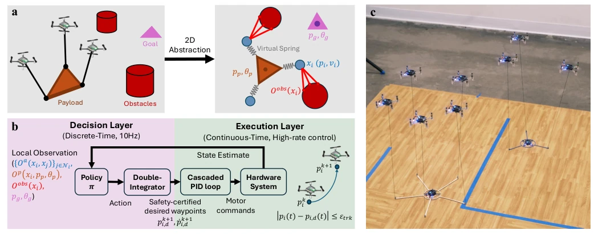
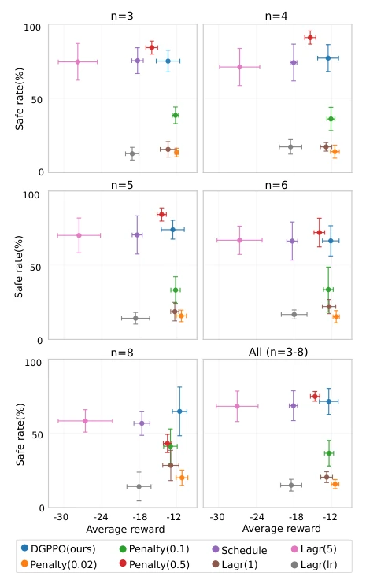
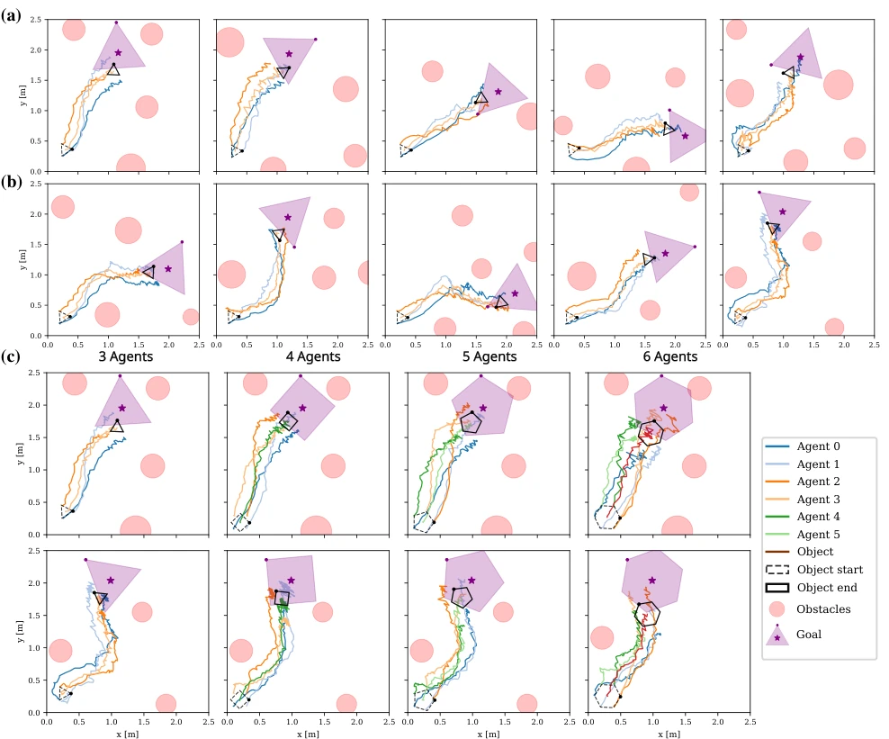
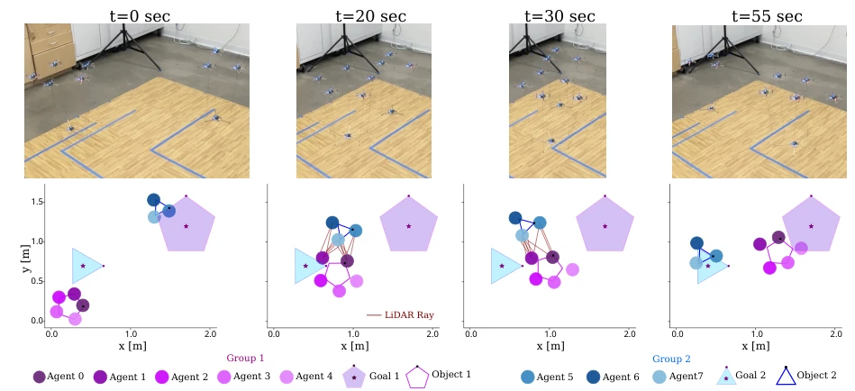

This paper proposes a "planar simplified version" for multi-vehicle aerial transport, reducing complex 3D cable dynamics to 2D virtual springs. While computational savings are achieved, can height disturbances truly be ignored during real-world flight? The authors claim zero-shot sim-to-real transfer; the Crazyflie drones indeed flew, but only for planar tasks, while swaying cables and aerodynamic effects in 3D space were attributed to the "low-level controller". DGPPO incorporates safety constraints into RL, which is more reliable than simple penalty functions. However, real-world experiments with more than 6 drones remain questionable, given that training only reached 5 drones. Overall, it is a promising distributed safe RL framework, but the boundaries of "scalability" depend on whether real-world deployment can handle more obstacles.
Multi-vehicle cooperative transport is highly useful in logistics and disaster relief, but reality is challenging. Existing methods either rely on centralized optimization [5][9] or can only handle small teams of 2-3 drones [7][8]; once the scale expands, cable coupled dynamics and sensor noise cause system failure. More problematic is that many safety guarantees depend on global state [13][14], which is unavailable during distributed execution. Moving obstacles in dynamic environments are particularly challenging; most existing learning methods are tested only in simulation [30-35], with very few real-world safe transfers. The core problem this paper aims to solve is: how to enable multi-vehicle cooperation that is both safe and scalable to more UAVs under fully distributed, local observation, while enabling direct deployment on real hardware.
The overall process is divided into three steps: First is "dimensionality reduction", using 2D abstraction to replace 3D dynamics, modeling cables as virtual springs, ignoring vertical disturbances, and retaining planar force coupling. Second is training, using the DGPPO algorithm to learn shared policies based on local graph observations while optimizing safety constraint functions (DGCBF). The key innovation here is Domain Randomization, randomizing team size (3-5 drones) and spring stiffness to enable policy generalization. Finally is theoretical bridging, proving that discrete-time DGCBF safety guarantees remain valid under continuous-time execution (PID tracking) by compensating for tracking error through tightening constraint boundaries. During real-world deployment, the policy outputs acceleration, the bottom-level PID tracks waypoints, forming a hierarchical control architecture.

Fig. 1: Distributed learning framework for safe and scalable multi-drone transportation. (a) Real-world cable-suspended transport and corresponding 2D abstraction. Drones are modeled as point masses connected to the payload via virtual springs, and obstacles are detected with LiDAR. (b) Control architecture and discrete-to-continuous safety bridge. A distributed policy π generates DGCBF-certified waypoints from local observations, tracked by an onboard PID controller. With bounded tracking error εtrk, tightened DGCBF constraints ensure continuous-time safety. (c) Zero-shot real-world deployment. The learned policy transfers directly to physical quadrotors without fine-tuning, demonstrating robust coordination in dynamic environments.
Simulation compared DGPPO with baselines such as MAPPO-Lagrangian, testing rewards and safety rates at scales of 3-8 drones; DGPPO demonstrated greater stability in safety rates. Real-world experiments used Crazyflie 2.1, with training ranging from 3-5 drones and testing extended to 6 drones. Scenarios were divided into Easy and Hard (with obstacles), verifying obstacle avoidance capabilities. The most rigorous aspect involved multi-group experiments where two groups of UAVs acted as dynamic obstacles for each other, achieving zero-shot collision avoidance. Metrics included average reward and safety rate, with real-world position tracking error <5.8cm. It was found that 6 drones, outside the training scale, were also usable, but in the 6-drone Hard scenario, there were cases of incomplete arrival, attributed to reward shaping rather than safety issues.

Fig. 2: Simulation results across different team sizes. For each number of agents (n ∈{3, 4, 5, 6, 8}), we evaluate poli- cies on 25 randomly generated scenarios. Each marker reports the mean reward and safety rate across five evaluation seeds (125 scenarios total), with error bars showing variability across seeds. We compare several distributed policy optimization backbones under the same setup.

Fig. 3: Hardware validation of distributed multi-drone transportation. (a) Easy scenarios where obstacles do not significantly affect the payload trajectory. (b) Hard scenarios where obstacles actively constrain the transport trajectories. (c) Scalability and generalization of a single learned policy evaluated with 3–6 agents.

Fig. 4: Multi-group multi-drone transportation experiment. Time-lapse snapshots and recorded trajectories show two independent teams transporting separate payloads while perceiving the other team as dynamic obstacles via LiDAR.